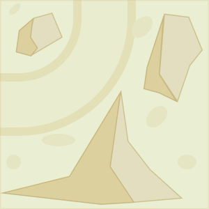
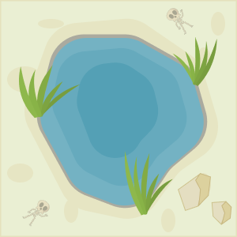

Játékleírás
Nekeresdországban Nevenincs király szeretne egy körvasutat építeni, amely bejárja a birodalmának minden szegletét. A feladat megvalósítása Furfangra, az udvari tanácsosra vár, akinek a munkáját nehezíti a királyság változatos tája. Segítsünk Furfangnak megtervezni a királyság vasúthálózatához tartozó térképet!
A játék különböző méretű négyzetrácsos hálón játszódhat, ahol a célunk az, hogy egy összefüggő körvasútvonalat alkossunk úgy, hogy minden olyan helyre eljusson a vonat, ahova lehetséges.
A térképen több különböző típusú mező található, melyek a játék kezdetén látszódnak a térképen:
 |
 |
 |
 |
| ÜRES MEZŐ | HÍD MEZŐ | HEGY MEZŐ | OÁZIS MEZŐ |
| Ebben a cellában a vasútvonal a belépési irányon kívül maradék három irányba tud haladni. | Ezen a mezőn a vasútvonalat csak a híd által megadott egyenes írányban lehet megépíteni. | Ezeken a mezőkön a sziklák a cellának két szomszédos kijáratát lezárják, így csak 90°-ban elfordulva lehet továbbhaladni. | Erre a cellára nem lehet vasutat építeni. |
Mivel szeretnénk a vasúthálózat alapanyagán spórolni, így a vasúthálózat sehol nem keresztezheti önmagát, sehol nem ágazhat el, és nem haladhat át többször egy cellán!